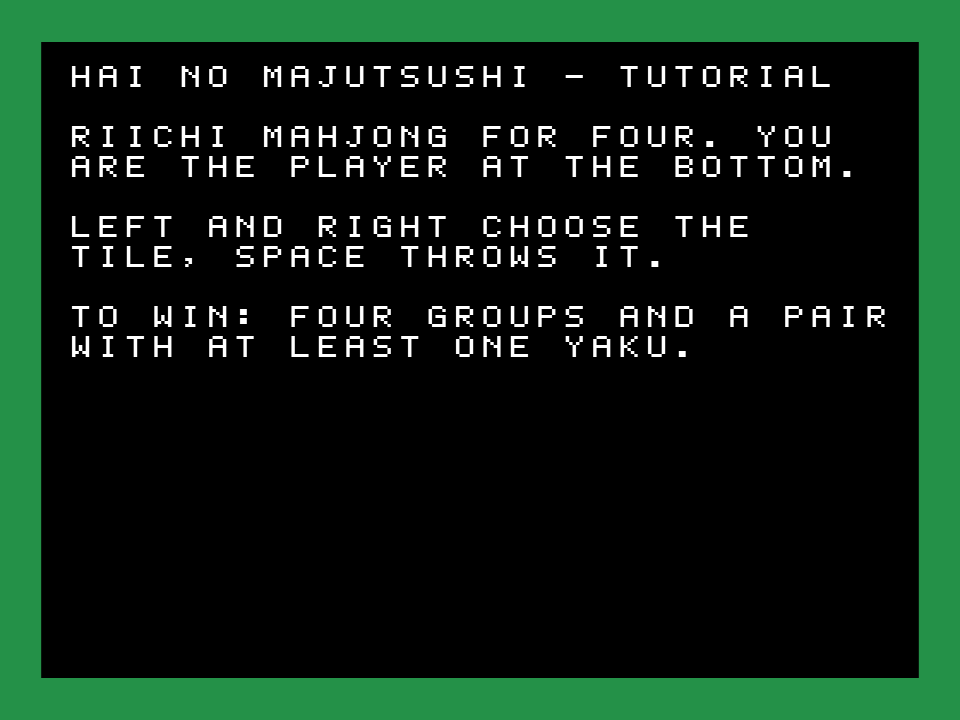
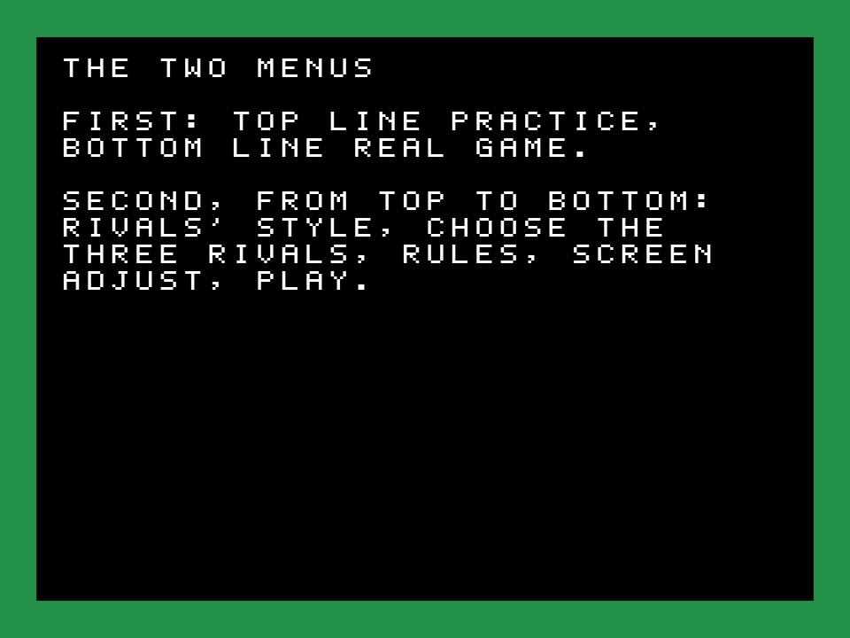
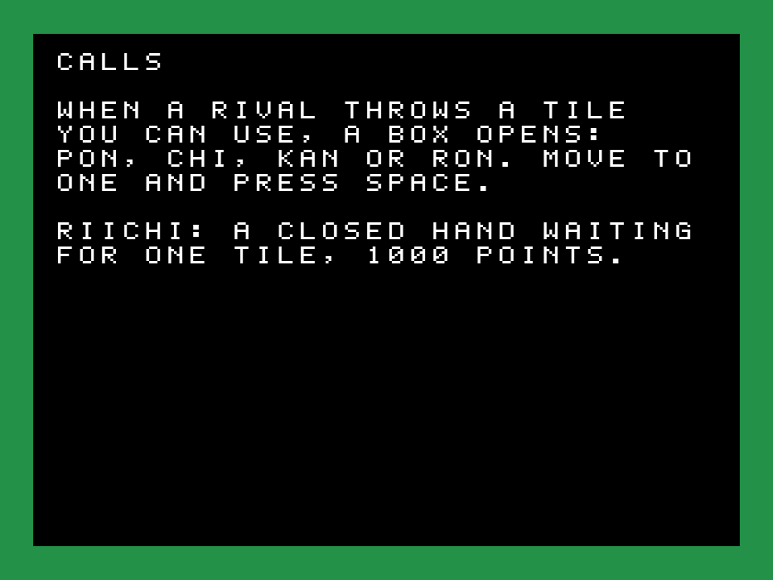
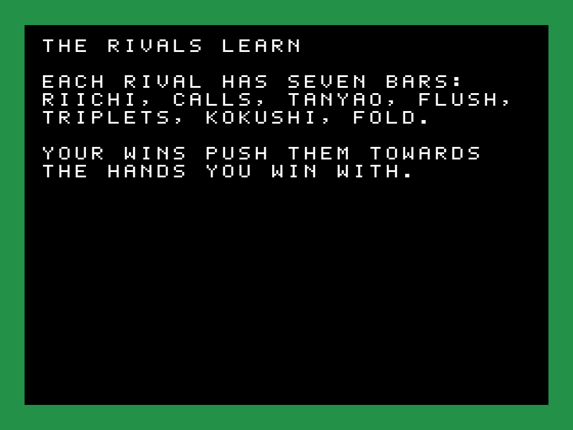
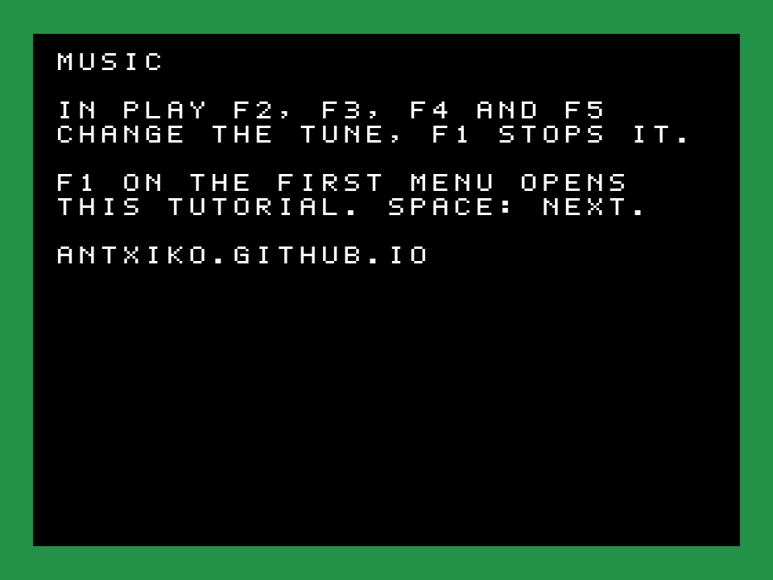

牌の魔術師 (Hai no Majutsushi - Mahjong 2; Konami, 1989, RC-765) es un mahjong para MSX2 con todos sus menús y mensajes en japonés. Este parche le añade un tutorial corto en inglés: con F1 en el primer menú, cinco páginas explican cómo se juega, los dos menús, las llamadas, los rivales y las teclas de la música. Espacio pasa de página; tras la última se vuelve al menú. El resto del juego no cambia.
1.264 bytes cambiados en 6 sitios · IPS de 1.302 bytes · todo en espacio que el cartucho no usa · no se distribuye ninguna ROM

 |  |
 |  |
7839c843dc787e01765c1ba3efbd26dcf5209d27e38bcee1345db3b3cffdf5db.7bd8b0686b13c6c57fcff8f89f79af7d8622e4fcec1a5b0b6d1c040e229ce543.En openMSX el cartucho necesita su mapper (Konami con DAC):
openmsx -machine C-BIOS_MSX2 -cart majutsushi_tutorial.rom -romtype MajutsushiCon Python 3 y pasmo en el PATH, y la ROM en la raíz como majutsushi.rom:
python tools/construye.py majutsushi.romEnsambla src/tutorial.asm, comprueba que cada sitio donde escribe tiene lo que tiene el cartucho original (o 0xFF donde usa espacio libre) y escribe work/majutsushi_tutorial.rom y el IPS. Cualquier otra ROM la rechaza. Los textos y la fuente están en tools/textos.py, que escribe src/datos.inc. python -m unittest discover -s tests pasa los 6 tests: los textos son los del fuente, el IPS solo toca los seis sitios declarados y, con la ROM en la raíz, el IPS es el que sale del fuente y original + IPS es el original byte a byte fuera de esos sitios.
bit 4,a en vez de ld c,a / and 10h / ld a,c, y los dos sprites del cursor escritos con ld l,4 en vez de alternar HL y HL' con exx. Así queda sitio para mirar F1 al entrar (el bit 0 de 0xC00C, las teclas de función recién pulsadas) y para el salto al tutorial. El cursor y su sonido se mueven unos bytes, así que se corrigen las tres instrucciones que entran en ellos (p00:436F, 4834 y 483B). Nada más cambia en el banco 0.En openMSX (C-BIOS MSX2): F1 en el primer menú abre el tutorial, las cinco páginas pasan con espacio, vuelve el menú, el cursor sube y baja y al elegir práctica se llega al segundo menú. Aún sin probar en un MSX de verdad.
MIT (LICENSE) para el parche, las herramientas y la documentación. El juego es de sus titulares: ver AVISO-LEGAL.md.